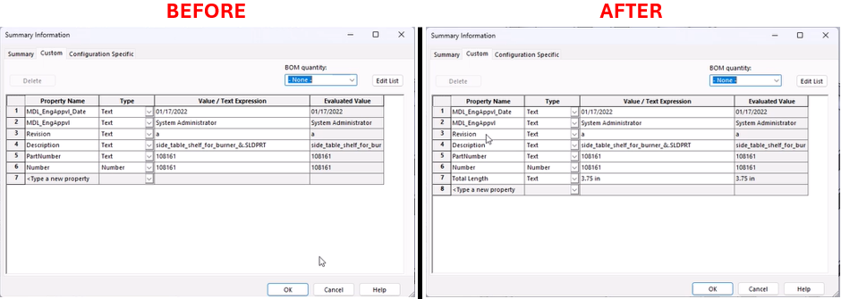

Measure Sketch and Add Length Property
Description
This macro measures the length of all the segments in the selected sketch of the active model file and adds the total length as a custom property with a value in inches or millimeters (up to 2 decimal places). The macro checks the model units and accordingly converts the total length into inches or mm based on the current unit system of the document.
System Requirements
- SolidWorks Version: SolidWorks 2014 or newer
- Operating System: Windows 7 or later
Pre-Conditions
Note
- The desired sketch must be selected from the feature manager before running the macro.
- The active document must be a part or assembly.
- The sketch should not contain any construction geometry or text, as these are ignored in the length calculation.
Results
Note
- The macro calculates the total length of all the sketch segments in the selected sketch.
- A custom property named "Total Length" is added to the part or assembly with the length value in inches or mm, depending on the document units.
- A message box will be displayed if no sketch is selected or the active document is not a part or assembly.
VBA Macro Code
' Disclaimer:
' The code provided should be used at your own risk.
' Blue Byte Systems Inc. assumes no responsibility for any issues or damages that may arise from using or modifying this code.
' For more information, visit [Blue Byte Systems Inc.](https://bluebyte.biz).
Option Explicit
Public Enum swSkchSegments_e
swSketchLINE = 0
swSketchARC = 1
swSketchELLIPSE = 2
swSketchSPLINE = 3
swSketchTEXT = 4
swSketchPARABOLA = 5
End Enum
Sub main()
' Declare and initialize necessary SolidWorks objects
Dim swApp As SldWorks.SldWorks ' SolidWorks application object
Dim swModel As SldWorks.ModelDoc2 ' Active document object (part or assembly)
Dim swSelMgr As SldWorks.SelectionMgr ' Selection manager object
Dim swFeat As SldWorks.Feature ' Feature object for the selected sketch
Dim swSketch As SldWorks.sketch ' Sketch object to store the selected sketch
Dim swCustProp As CustomPropertyManager ' Custom property manager for adding properties to the model
Dim swSkchSeg As SldWorks.SketchSegment ' Sketch segment object for each segment in the sketch
Dim UserUnit As UserUnit ' User unit object to determine the document's unit system
Dim i As Long ' Loop counter for iterating through sketch segments
Dim bRet As Boolean ' Return status of custom property addition
Dim vSkchSeg As Variant ' Array to hold the sketch segments in the selected sketch
Dim nLength As Double ' Total length of the sketch segments
' Initialize SolidWorks application and get the active document
Set swApp = Application.SldWorks
Set swModel = swApp.ActiveDoc
' Check if a document is currently active
If swModel Is Nothing Then
MsgBox "No active document found. Please open a part or assembly and try again.", vbCritical, "No Active Document"
Exit Sub
End If
' Check if the active document is a part or assembly (skip if it's a drawing)
If swModel.GetType = 3 Then
MsgBox "This macro only works on parts or assemblies. Please open a part or assembly and try again.", vbCritical, "Invalid Document Type"
Exit Sub
End If
' Get the user unit system (e.g., metric or imperial)
Set UserUnit = swModel.GetUserUnit(swUserUnitsType_e.swLengthUnit)
' Get the selection manager object
Set swSelMgr = swModel.SelectionManager
' Check if a sketch is selected in the feature manager
If swSelMgr.GetSelectedObjectCount2(-1) > 0 And swSelMgr.GetSelectedObjectType3(1, -1) = swSelSKETCHES Then
' Get the selected sketch feature
Set swFeat = swSelMgr.GetSelectedObject5(1)
Set swSketch = swFeat.GetSpecificFeature2
' Get all the sketch segments in the selected sketch
vSkchSeg = swSketch.GetSketchSegments
' Loop through each segment in the sketch
For i = 0 To UBound(vSkchSeg)
Set swSkchSeg = vSkchSeg(i)
' Ignore construction lines and text segments
If swSkchSeg.ConstructionGeometry = False Then
If swSketchTEXT <> swSkchSeg.GetType Then
' Accumulate the length of valid sketch segments
nLength = nLength + swSkchSeg.GetLength
End If
End If
Next i
' Clear any selections in the document
swModel.ClearSelection2 True
' Get the custom property manager object for the active document
Set swCustProp = swModel.Extension.CustomPropertyManager("")
' Add the total length as a custom property in inches or mm based on the unit system
If UserUnit.IsMetric = False Then
bRet = swCustProp.Add3("Total Length", 30, Round(nLength * 39.3701, 2) & " in", 1) ' Add total length in inches
ElseIf UserUnit.IsMetric Then
bRet = swCustProp.Add3("Total Length", 30, Round(nLength * 1000, 2) & " mm", 1) ' Add total length in mm
End If
Else
' Show error message if no sketch is selected
MsgBox "Please select a sketch from the feature manager and try again.", vbExclamation, "No Sketch Selected"
Exit Sub
End If
End Sub
Macro
You can download the macro from here
Customization
Need to modify the macro to meet specific requirements or integrate it with other processes? We provide custom macro development tailored to your needs. Contact us.